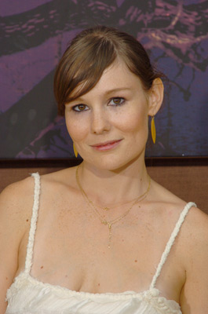

#2686 Gefühlt Mitte Zwanzig
Alternativ: While We're Young

 IMDB-Wertung: 6.3 / 10
IMDB-Wertung: 6.3 / 10  Metascore: 77
Metascore: 77 
Während all ihre Freunde Kinder kriegen, genießen Josh und Cornelia die Freiheiten, die ihnen ihre Zweisamkeit ermöglicht. Sie wohnen in Brooklyn, sind glücklich in ihren 40ern – werden aber irgendwie das Gefühl nicht los, dass das wahre Leben an ihnen vorbei zieht. Als sie Jamie und Darby kennen lernen, ein junges Hipster-Paar Mitte Zwanzig, ist es Freundschaft auf den ersten Blick. Die beiden begegnen Josh und Cornelia mit einer Offenheit, die sie fasziniert und selbst wieder ein Stück jünger fühlen lässt. Immer mehr werfen sie die zur Gewohnheit gewordenen Spießigkeiten ihres Alters über Bord und schmeißen sich mitten hinein in das Leben von Jamie und Darby. Zur Verwunderung ihrer gleichaltrigen Freunde „verjüngen“ sie plötzlich ihren Kleidungsstil, entdecken Hip Hop-Tanz für sich oder besuchen gemeinsam spirituelle Sitzungen. Zwar sind Josh und Cornelia selbst etwas überrascht von sich und ihrer „Frischzellenkur“, aber was soll’s, man ist nur einmal wieder jung. Doch während die beiden Paare sich einander immer näher kommen, wird auch immer deutlicher, was sie voneinander trennt. Wäre Alter nur ein Gefühl, Josh und Cornelia wären wieder Mitte Zwanzig. Aber es ist eben mehr als das, und das Leben lässt sich nicht so einfach zurück drehen…
Jahr: 2014
Dauer: 97 Minuten
FSK: 0
Land: USA Studio: A24Tonspuren: DTS - ,
Untertitel:
Auflösung: 1080p (1920x1040) Größe: 7249 MB
Genre: Drama, Komödie
Regisseur: Noah Baumbach
Drehbuch: Noah Baumbach, Henrik Ibsen, Wallace Shawn
Soundtrack: James Murphy
Darsteller:
 Naomi Watts als Cornelia
Naomi Watts als Cornelia Ben Stiller als Josh
Ben Stiller als Josh Maria Dizzia als Marina
Maria Dizzia als Marina- Adam Horovitz als Fletcher
 Matthew Maher als Tim
Matthew Maher als Tim- Peter Yarrow als Ira Mandelstam
 Adam Driver als Jamie
Adam Driver als Jamie Amanda Seyfried als Darby
Amanda Seyfried als Darby- Dree Hemingway als Tipper
 Matthew Shear als Benny
Matthew Shear als Benny- Quincy Tyler Bernstine als Pepper
- James Manzello als Music Class Band
 James Saito als Dr. Nagato
James Saito als Dr. Nagato Charles Grodin als Leslie Breitbart
Charles Grodin als Leslie Breitbart- Danielle Slavick als Party Guest
- Greg Keller als Party Guest
-  Liz Stauber als Kent's Sister
 Brady Corbet als Kent
Brady Corbet als Kent- Ryan Serhant als Hedge Fund Dave
- Wyatt Ralff als Louis
 Guy Boyd als Bar Patron
Guy Boyd als Bar Patron- Adam Senn als Bartender
- Peter Bogdanovich als Speaker
 Greta Lee als Sundance Interviewer
Greta Lee als Sundance Interviewer- Jeremiah Burch III als Hip-Hop Dancer , uncredited
 Candice T. Cain als Kidville Mom , uncredited
Candice T. Cain als Kidville Mom , uncredited- Gabriella Campagna als Friend of Jamie , uncredited
- Kimberly Marie Freeman als Diner , uncredited
- Ashley James als Sundance Attendee / Finance Pedestrian , uncredited
 Doris McCarthy als Brooklyn Resident , uncredited
Doris McCarthy als Brooklyn Resident , uncredited- Scott Rudin als Party Guest , uncredited
- Edward Sass III als Birthday Party Guest , uncredited
 Nancy Ellen Shore als Continuing Ed Student , uncredited
Nancy Ellen Shore als Continuing Ed Student , uncredited- Jessica Treubig als Hip-Hop Dancer , uncredited
- Bonnie Kaufman als Ira's Wife
- Hector Otero als Frank
- Deborah Eisenberg als New School Woman
- Annie Baker als Elise
- Laura Hankin als Music Class Band
- Stoddard Blackall als Music Class Band
- Ariel Bethany als Music Class Band
- Juan Torriente als Leslie's Colleague
- Dean Wareham als Shaman
- Erin Byrne als Ayahuasca Woman
- Lily Thorne als Party Guest
- Matthew Kaplan als Party Guest
- Nico Baumbach als Party Guest
- John Wildman als Red Carpet Coodinator
- Roberto Pascotto als Tribute Guest
- Phil Pinto als Latino Lover , uncredited
Datei: X:\2014(G-M)\Gefühlt Mitte Zwanzig (2014, FSK0, 1920x1040).mkv seit 02.12.2015
Festplatte: HD 2013(I-Z)-2014(A-Z)
 Es gibt insgesamt 136 Filme in der Gruppe '2014(G-M)'
Es gibt insgesamt 136 Filme in der Gruppe '2014(G-M)'